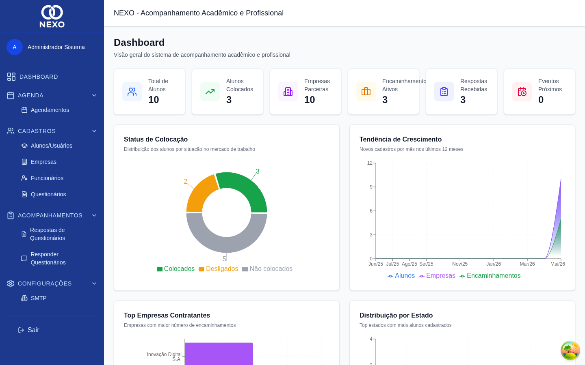

Dashboard
O Dashboard é a tela inicial do NEXO. Reúne os principais indicadores, gráficos e atalhos para criar novos cadastros.
| Permissão | ADM | RH | COORD | PROF | DIR |
|---|---|---|---|---|---|
| Visualizar dashboard | ✓ | ✓ | ✓ | ✓ | ✓ |
O que aparece na tela

Indicadores (KPIs)
- Total de Alunos — quantidade de alunos cadastrados.
- Alunos Colocados — alunos com pelo menos um encaminhamento ativo.
- Empresas Parceiras — quantas empresas estão no sistema.
- Encaminhamentos Ativos — vínculos sem data de desligamento.
- Respostas Recebidas — total de respostas de questionários.
- Eventos Próximos — eventos da agenda nos próximos dias.
Gráficos
- Colocação — proporção de alunos colocados vs. não colocados.
- Tendência — evolução nos últimos 12 meses.
- Top empresas — empresas com mais encaminhamentos.
- Alunos por estado — distribuição geográfica.
- Eventos por tipo — visitas, avaliações, reuniões etc.
- Respostas por questionário — engajamento por formulário.
Alerta de encaminhamentos terminando
Quando há encaminhamentos previstos para se encerrar nos próximos 30 dias, um aviso amarelo aparece no topo do dashboard listando os alunos afetados.

Atividade recente e atalhos
No rodapé da página estão a tabela de atividade recente (últimos encaminhamentos criados) e três cartões de ação rápida que levam diretamente para os cadastros mais usados:
- Novo Aluno → cadastro de aluno
- Nova Empresa → cadastro de empresa
- Novo Funcionário → cadastro de funcionário (apenas ADM/RH)
Dica
Clique em qualquer indicador para ir direto para a lista correspondente já filtrada (quando aplicável).